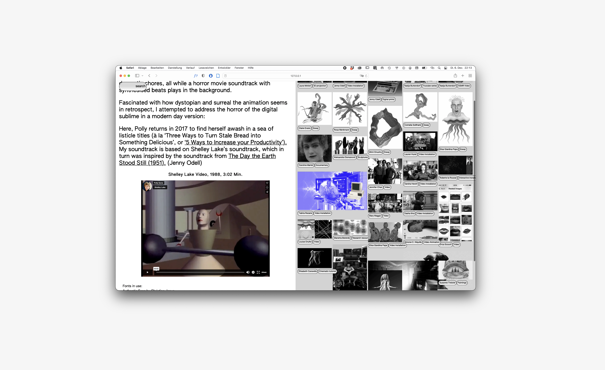
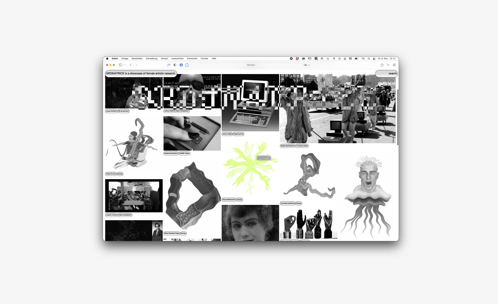

Die digitale Ausstellung ORDINATRICE bringt internationale künstlerische Positionen und Werke von Flinta*-Hackerinnen, Entwicklerinnen und Künstlerin- nen zusammen, die das Verhältnis von Kunst, Techno- logie und Gender diskutieren. Der Showcase ermög- licht neue Einblicke und einen digitalen Showcase.



